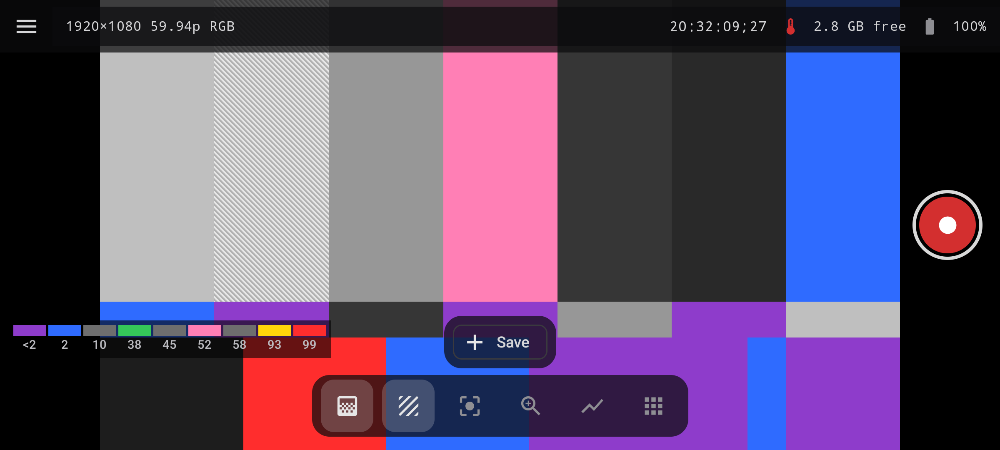
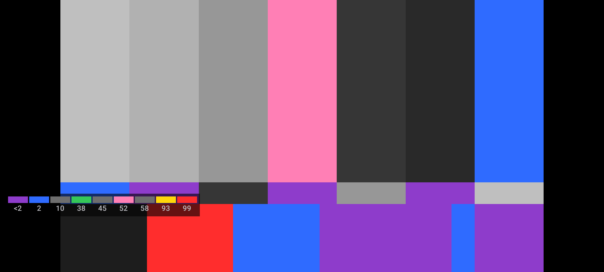

Know what the signal is doing
Waveform, vectorscope, histogram, zebras, false colour, peaking and more help make exposure, colour and focus visible.
EKIIRA / FIELD MONITOR + CINEMA CAMERA
Connect a camera over HDMI—or use the phone's own camera. FieldScope Pro puts scopes, exposure tools, focus aids and recording in the same pocket-sized set tool.
USB HDMI CAPTURE · ON-DEVICE SCOPES · NO ACCOUNT REQUIRED

Two jobs. One toolkit.
Use a capture card to monitor an external camera, switch to a built-in phone lens, or review a local clip—with the tools where you need them.
Waveform, vectorscope, histogram, zebras, false colour, peaking and more help make exposure, colour and focus visible.
Move from automatic capture to manual exposure, focus, white balance, RAW photos and log video on supported hardware.
Landscape, portrait, tablet and foldable layouts adapt the controls, scope dock and monitoring view to the setup.
Read the frame
False colour, zebras, clipping warnings, spot meters and exposure preview help you judge the signal instead of guessing from a small screen.
See exposure tools
From camera to monitor
Use a compatible USB HDMI capture device for external cameras, or open the built-in camera and bring monitoring tools along.
An honest tool for real devices
Go deeper
See the full monitoring toolset, manual phone camera features, setup guide, Pro comparison and compatibility notes.